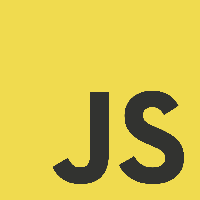

Le développement
Le Javascript :

Javascript est un language de programmation de script employé pour rendre une page web interactive, le comportement de la page et son apparence pourra varier en fonction de certains paramètres.
Le PHP :
Le PHP est un language de programmation libre, utilisé pour générer des pages web dynamiques, qui sont donc modifiées en fonction de certaines informations (heure, nom de l'utilisateur, formulaire rempli par l'utilisateur, etc).
MySQL :
MySQL est un système de gestion de base de données, il permet d'enregistrer des informations rempli par l'utilisateur (exemple : formulaire de création de compte) pour être ensuite réutilisé au moment approprié (ex : connexion à un site internet avec identifiant et mot de passe).